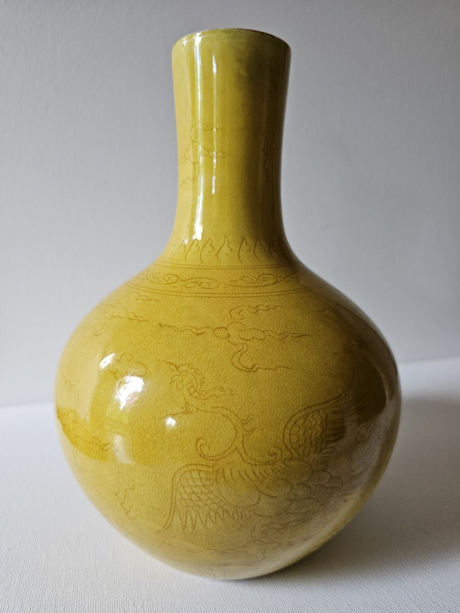
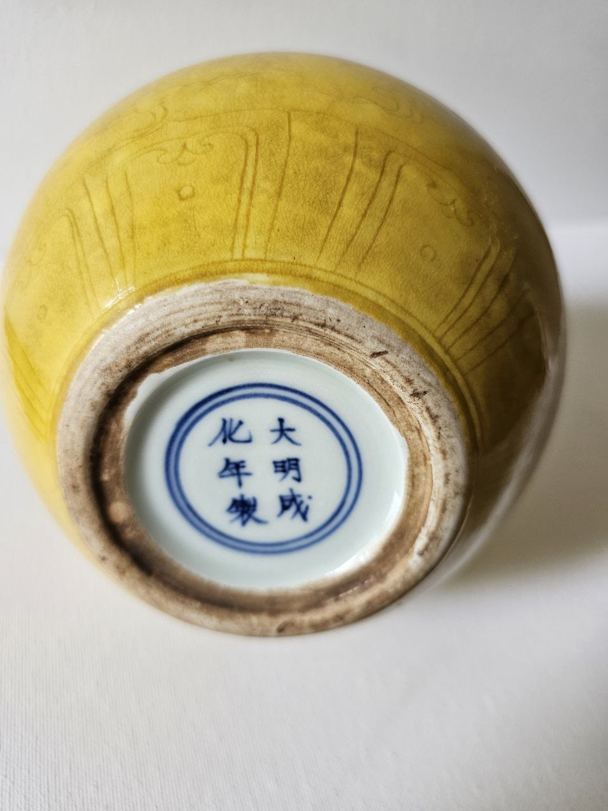
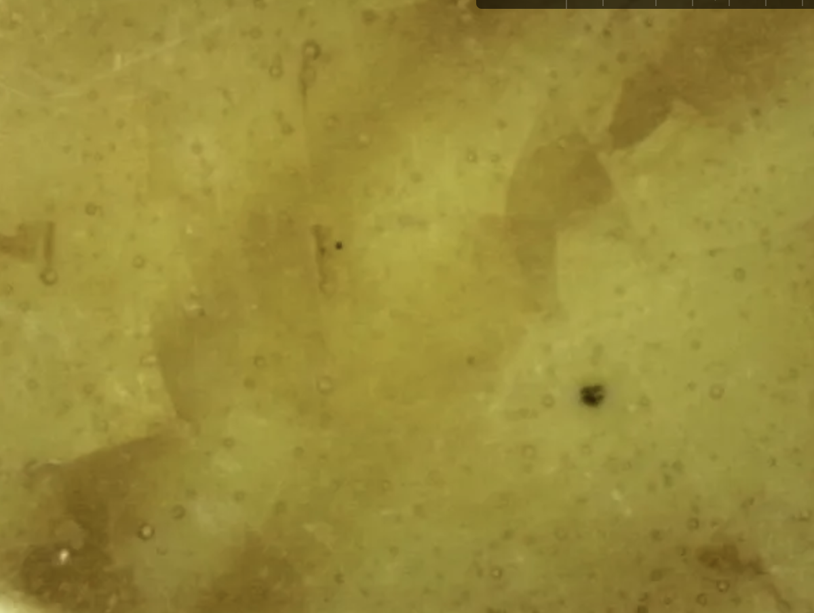
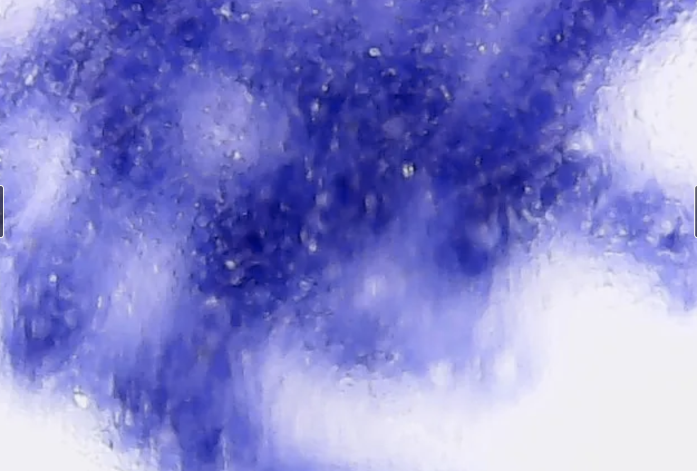
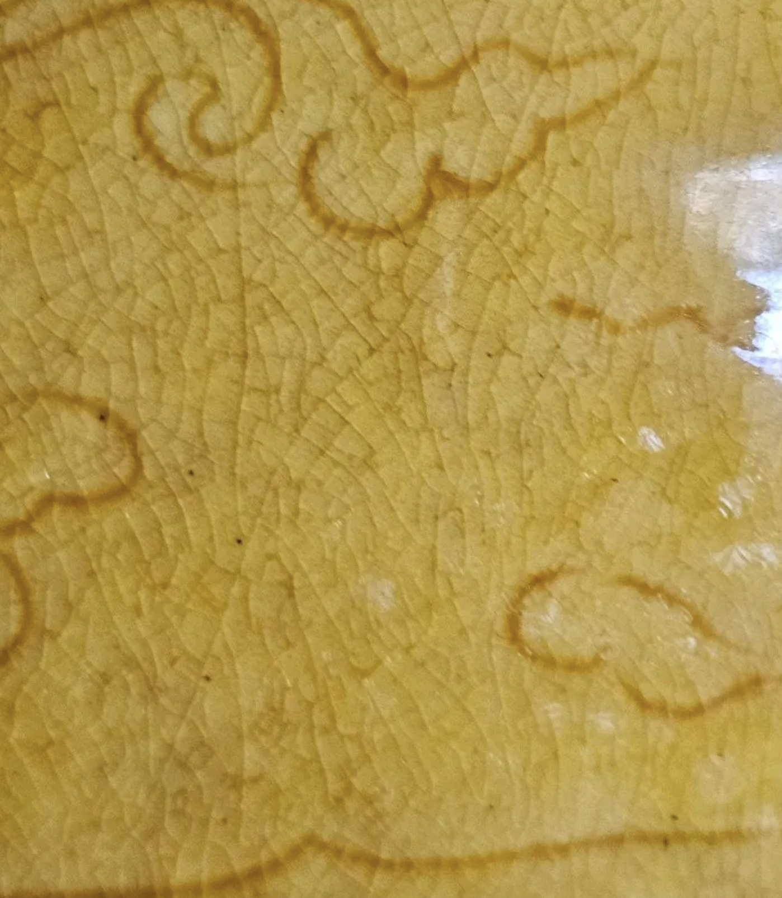

Global Diagnostic Atlas
of Ancient Chinese Ceramics
An independent scientific platform dedicated to the authentication and technological investigation of ancient Chinese ceramics and porcelain. The Atlas combines high-resolution photography, microstructural examination, comparative diagnostics and interdisciplinary research methods to establish reproducible criteria for identifying authentic historical ceramics.
Scientific Director and Founder
Professor Nona Dmitrievna Dronova
Doctor of Technical Sciences · Ph.D. in Geology and Mineralogy
Principal Reference Collection

Cat. 1 — Museum object · Overall view · RO-MING-JDZ-001

Cat. 1 — Museum object · Foot rim · Chenghua reign mark

Cat. 2 — Scientific photo · Yellow glaze microstructure · Optical microscopy

Cat. 2 — Scientific photo · Cobalt blue underglaze mark · High magnification
RO-MING-JDZ-001 · Confirmed
Imperial Sacrificial Yellow
Bottle Vase with Dragon
and Phoenix
Chenghua Yellow Glazed Tianqiuping
This authenticated imperial porcelain vase is presented as one of the principal reference objects of the Atlas. Its preserved technological characteristics provide a documented diagnostic standard for the study and authentication of Chenghua imperial porcelain. The object has undergone comprehensive visual, microstructural and archival examination.
Diagnostic Features Present
Analytical Methods Applied
Natural Age-Related Crackle

Fig. 1. Natural age-related crackle preserved within the glaze. Fine network of stress fractures visible across the decorative surface. Object: RO-MING-JDZ-001. Technique: Optical macroscopy.
Scientific definition
A network of fine stress fractures formed progressively within a ceramic glaze over centuries of thermal cycling and environmental exposure.
Natural age-related crackle is distinguished from intentional crackle glazes (such as those of Guan or Ge wares) by its formation mechanism, network density, crack morphology, and the presence of organic staining within the fissures accumulated over time. It constitutes one of the primary diagnostic indicators of authentic period ceramics.
Formation
Progressive thermal cycling over 500+ years
Identification
Optical macroscopy · Microstructural analysis
Diagnostic value
Primary indicator of period authenticity
Feature ID
DF-GLAZE-CRACKLE-NATURAL
Core Diagnostic Methods
The Atlas applies a comprehensive diagnostic methodology based on the correlation of visual, technological and microstructural evidence. Every reference object is examined through multiple complementary analytical approaches rather than by a single diagnostic feature.
Microstructural Analysis
Examination of ceramic body and glaze at the microscopic scale using gemmological microscopy. Reveals inclusion density, vitrification degree, glaze–body interface character, and firing indicators.
Glaze Diagnostic Analysis
Systematic characterisation of glaze layer properties: colour range, surface quality, thickness, pooling behaviour, and elemental composition. Enables kiln attribution by chemical and optical signature.
Crackle Pattern Analysis
Systematic visual and microscopic characterisation of crazing networks. Distinguishes natural age-related crackle from intentional crackle glazes. Pattern morphology is diagnostic for specific kiln traditions.
Body Fabric Analysis
Assessment of paste composition, texture, and firing characteristics. Identifies clay body type, inclusion assemblage, and production technology consistent with specific kilns and periods.
Firing Technology Analysis
Identification of marks left by kiln furniture and atmospheric conditions. Spur marks, firing supports, and atmosphere effects are diagnostic for specific firing technologies and kiln types.
Archival Verification
Cross-referencing of physical findings with historical records, excavation reports, and published scholarship. Establishes documentary basis for attribution and dating conclusions.
Seven knowledge domains
The Atlas is structured as a scientific knowledge graph. Seven co-equal domains form the system — each an entry point into the same interconnected database of ceramic knowledge.
Diagnostic
Features
Observable and measurable properties that carry attribution value. Glaze, microstructure, firing traces, form morphology, decoration.
60–80 pages at scale ROReference
Objects
Individual ceramic artifacts with confirmed attribution, documented provenance, measured physical properties, and analytical data.
150–180 pages at scale KLNProduction
Kilns
Ceramic production sites as knowledge entities: geographic location, active periods, characteristic output, and analytical signatures.
30–40 pages at scale DYNDynasty
System
Chronological scaffolding of the Atlas. Structured indexes of active kilns, characteristic features, and key objects per period.
18–24 pages at scale MTHAnalytical
Methodology
Reference pages for analytical and examination techniques: operating principles, instrumentation, workflow, and diagnostic decision logic.
20–30 pages at scale PUBScholarly
Publications
Structured bibliographic records for all works cited in the Atlas: articles, monographs, excavation reports, and exhibition catalogues.
40–60 pages at scale AUTAuthor
Profiles
Records of scholars whose publications are cited in the system, with links to their publications and documented entities.
Within publications domainProject statistics
300+
Reference pages planned
6
Core diagnostic methods
7
Knowledge domains